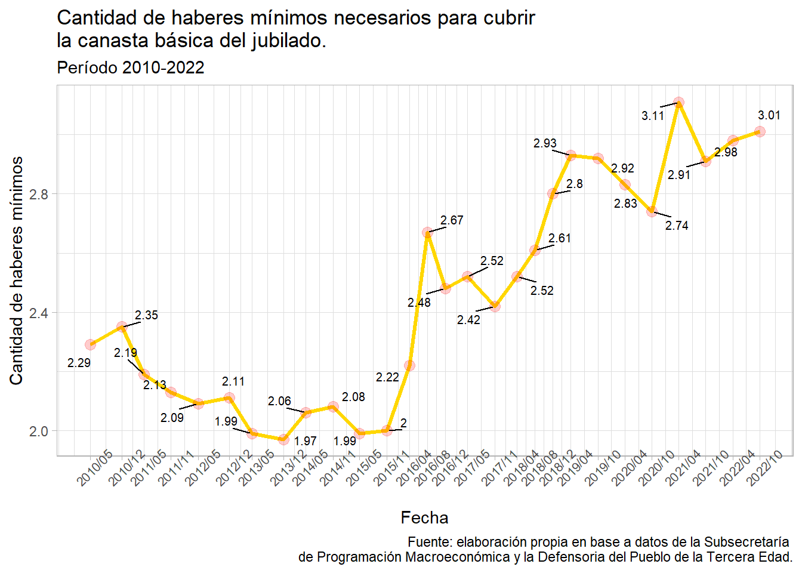
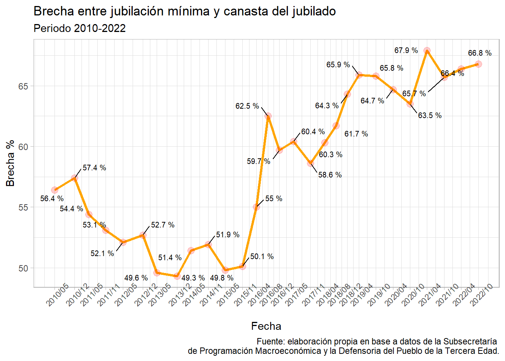

Situaciones de pobreza por ingreso en adultos mayores con R (y Python)
codigo
analisis
tutorial
Author
Lic. Pedro Damian Orden
Published
October 15, 2022
Pregunta y presentación del tema
La crisis de ingresos, que sobrevino a la pospandemia y al acuerdo de deuda con el Fondo Monetario Internacional, ha tenido un impacto profundo en las condiciones de vida de los argentinos y argentinas1.
En el caso de la pobreza, como en otros períodos históricos de crisis social y económica, pasó de ser un problema exclusivo de aquellas personas con dificultades para obtener un puesto de trabajo o en condiciones de marginación social, para alcanzar a otros sectores sociales tradicionalmente incluidos como los ocupados2, siendo incluso muchos de ellos empleados del sector formal de la economía, o bien sectores de jubilados; que aún cobrando un haber previsional, producto del trabajo de su vida, no alcanzan a cubrir sus necesidades básicas esenciales.
Dicho lo cual, la propuesta aquí será explorar la realidad de este segundo grupo, muchas veces invisibilizado negado por la sociedad y las academias universitarias: los jubilados. Pondremos nuestra atención particularmente en el subgrupo que cobra el haber mínimo y que representa, según ANSES3, aproximadamente el 50% del segmento de pasivos en Argentina. Operativamente, se buscará conocer a lo largo de los últimos 10 años cómo han evolucionado las jubilaciones mínimas en nuestro país, y en qué medida han alcanzado, o no, a cubrir la canasta básica específica calculada por la Defensoría del Pueblo de la Tercera Edad de la Ciudad de Buenos Aires.
Finalmente, se procurará aportar nuevos elementos para pensar el proceso empobrecimiento de este colectivo por ingresos.
Recopilación de datos y fuentes
Para explorar los datos de ingresos de los jubilados se consultará del portal de datos abiertos del Estado Nacional el repositorio del haber mínimo jubilatorio, mensual, en pesos corrientes desde 1971, a cargo de la Subsecretaría de Programación Macroeconómica de la Nación.
Los valores de costo de vida se analizan en función de la denominada “Canasta De Los Jubilados”, una estimación complementaria a las oficiales, desarrollada por la Defensoría del Pueblo de la Tercera Edad de la Ciudad de Buenos Aires . Los datos fueron recuperados de la web por medio de una técnica simple de escrapeo y se encuentran disponibilizados github.
Por medio del cruce de ambos conjuntos de datos se pretende aportar nuevas claves para estimar en qué medida el colectivo de adultos mayores que cobra el haber mínimo previsional puede garantizar para sí una canasta adecuada a sus necesidades reales.
Librerías
Para comenzar se requerirán las librerías tidyverse y lubridate necesarias para los procesamientos que siguen a continuación.
Carga de datasets y primera aproximación a los datos
Se cargan los conjuntos de datos jubilación y canasta.
En ambos casos se trata de archivos formato csv, levantados en R con la función read.csv().
Ver código
#datos de haberes minimosjubilacion <-read.csv("https://infra.datos.gob.ar/catalog/sspm/dataset/58/distribution/58.1/download/haber-minimo-jubilatorio-pesos-corrientes-valores-mensuales-desde-1971.csv")canasta <-read.csv("https://raw.githubusercontent.com/pedroorden/canasta-jubilados/main/canasta.csv")
Dado que el Estado Nacional generalmente plantea demoras significativas en la actualización de datos abiertos, agregamos manualmente el valor de jubilación para octubre de 2022.
jubilacion contiene, como mencionamos anteriormente, los valores históricos del haber mínimo desde 1971 en Argentina . De aquí se seleccionan las columnas indice_tiempo y mensual_pesos, con datos de fecha y valor del haber respectivamente.
Ver código
canasta <- canasta%>%select(!X)
Por su parte, el conjunto de datos canasta recupera los valores de la canasta de los jubilados desde 2010 a la fecha y se compone de una variable de tiempo (indice_tiempo) y otra propia de su valorización neta (valor.canasta). Se descarta la variable X que numera las filas.
Transformación de datos
canasta y jubilacion serán combinados vía la función left_join() en un nuevo dataframe llamado datosjub, que contiene las variables originales, y crea la variable ncanasta que divide por mes el valor de la canasta de los jubilados por el monto mensual de los haberes, generando el dato de cuántas jubilaciones mínimas son necesarias para cubrir el costo de vida real de un jubilado desde 2010 a la fecha.
Seguidamente se renombran variables por un tema de practicidad y se transforma la columna fecha en formato temporal.
Importante: la decisión de hacer el join a partir del df canasta (y no del dataset jubilación) tiene que ver con la posibilidad de establecer la línea de tiempo de referencia del análisis a partir de las observaciones parcialmente continuas que supone el proceso de medición de la canasta de los jubilados.
Visualización
Una primera pregunta que sobrevuela desde el inicio de este trabajo es si efectivamente el haber mínimo logra cubrir el costo de la canasta básica de los jubilados. Lo averiguaremos imprimiendo un gráfico de ggplot2 de las dos curvas en paralelo:
Ver código
datosjub%>%select(fecha,canasta,haber_minimo)%>%gather('variable', 'monto', c(2:3))%>%ggplot(.) +aes(x = fecha, y = monto, colour = variable) +geom_line(size =0.9) +scale_color_manual(values =c(canasta ="#F8C36D", haber_minimo ="#7DA4E2")) +scale_x_date(date_labels ="%Y/%m",breaks =unique(datosjub$fecha))+labs(title ="Evolución comparada de la canasta básica de los jubiladosy del haber mínimo previsional entre 2010 y 2022.", subtitle ="Por año y mes de medición de la canasta.", x ="Fecha", y ="Monto en pesos", caption ="Fuente: elaboración propia en base a datos de la Subsecretaría de Programación Macroeconómica y la Defensoria del Pueblo de la Tercera Edad.", color ="Variable") +theme_light() +theme(axis.text.x =element_text(angle =45, size =8))+theme(legend.position ="bottom")
Observaremos que desde que comenzó a medirse la canasta de los jubilados en 2010, ésta siempre se mantuvo en ascenso y los haberes mínimos previsionales jamás llegaron a cubrirla.
Con respecto a la cantidad de jubilaciones mínimas necesarias para alcanzar el costo de la canasta se verá lo siguiente:
Ver código
library(ggrepel)ggplot(datosjub) +aes(x = fecha, y = ncanasta) +geom_line(size =1.1, colour ="gold")+geom_point(size =3, colour ="red", alpha=0.2) +scale_x_date(date_labels ="%Y/%m",breaks =unique(datosjub$fecha))+geom_text_repel(aes(label = ncanasta), box.padding =0.5, size=2.7)+labs(title ="Cantidad de haberes mínimos necesarios para cubrirla canasta básica del jubilado.", subtitle ="Período 2010-2022", x ="Fecha", y ="Cantidad de haberes mínimos", caption ="Fuente: elaboración propia en base a datos de la Subsecretaría de Programación Macroeconómica y la Defensoria del Pueblo de la Tercera Edad.")+theme_light()+theme(axis.text.x =element_text(angle =45, size =8))

Según lo indica la gráfica, para el período de análisis, se han requerido no menos de dos haberes mínimos para empatar los valores de la canasta básica.
Se generará para finalizar un último dato, relativo a la brecha porcentual entre canasta y haber mínimo.
Ver código
library(glue)brecha<-datosjub%>%mutate(brecha=round(c(canasta-haber_minimo)/canasta*1e2, digits =1))brecha%>%ggplot() +aes(x = fecha, y = brecha) +geom_line(size =1.1, colour ="orange") +geom_point(size =3, colour ="red", alpha=0.2) +scale_x_date(date_labels ="%Y/%m",breaks =unique(datosjub$fecha))+geom_text_repel(aes(label =glue("{brecha} %")), box.padding =0.5, size=2.7)+labs(title ="Brecha entre jubilación mínima y canasta del jubilado", subtitle ="Periodo 2010-2022", x ="Fecha", y ="Brecha %", caption ="Fuente: elaboración propia en base a datos de la Subsecretaría de Programación Macroeconómica y la Defensoria del Pueblo de la Tercera Edad.")+theme_light()+theme(axis.text.x =element_text(angle =45, size =8))

Desde 2018 la brecha entre jubilaciones mínimas y canasta se mantiene en valores superiores al 60%.
A lo largo de este documento se ha recurrido a la potencia técnica de R y Quarto para dar cuenta, en forma exploratoria, de una situación de empobrecimiento progresivo de no menos de la mitad de hombres y mujeres que cobran el haber mínimo jubilatorio en Argentina.
Si bien es importante destacar que en términos rigurosamente científicos -ya sean econométricos, como sociológicos o estadísticos- es necesario evaluar las mediciones de la canasta utilizada4, una canasta básica de $151.478 en un contexto en el que 6.000.000 de jubilados cobran una mínima de $43.000 y en el que el resto recibe un haber promedio de $ 65.000. Mientras que la Pensión Universal para Adultos Mayores (PUAM) es de $ 34.642 invita a repensar el rol y la prioridad que asignamos como sociedad a nuestros mayores. Rol y prioridad que, en parte, puede ser reconstruido analíticamente en base a las políticas de ingreso precario tomadas para el sector por el Estado Nacional en los últimos 10 años.
En un contexto económicamente acuciante como el que vive la Argentina, huelga no dejar de pensar los problemas de las grandes mayorías sociales, y dar nuevos debates acerca de la eficacia y eficiencia del sistema previsional actual, que en su devenir sume en una situación de pobreza creciente a lxs adultxs mayores, con todos los peligros latentes5 que ello implica para un colectivo que, según cita la bibliografía especializada, ya se encuentra vulnerado6 previamente de maneras múltiples.
Bonus:
Cómo vimos antes podemos correr código de r y python de manera complementaria. Es importante hacer estas triangulaciones para optimizar el análisis.
Por ejemplo, corramos un chunk de python, para que se ejecute tenemos que tenerlo instalado en nuestra PC. Vamos levantar datos de salario mínimo y a compararlos con los de las de los haberes mínimos.
Ver código
import pandas as pd# consturimos nuestro dataframeurl="https://infra.datos.gob.ar/catalog/sspm/dataset/57/distribution/57.1/download/indice-salario-minimo-vital-movil-valores-mensuales-pesos-corrientes-desde-1988.csv"c=pd.read_csv(url)#nos quedamos con dos variablessalarios = c[["indice_tiempo", "salario_minimo_vital_movil_mensual"]]#chequeamos nuestros datosprint(salarios.head(5))#guardamos nuestro set en un csv
Tomado de Di Giovambattista, Ana Paula; Panigo, Demian Tupac; Medici, Florencia; Gárriz, Ana Inés; Trabajadores pobres en Argentina; Centro de Estudios e Investigaciones Laborales; Empleo, Desempleo y Políticas de Empleo; 12; 12-2012; 1-69.↩︎
@online{pedrodamianorden2022,
author = {Lic. Pedro Damian Orden},
editor = {},
title = {Situaciones de Pobreza Por Ingreso En Adultos Mayores Con {R}
(y {Python)}},
date = {2022-10-15},
langid = {en}
}
For attribution, please cite this work as:
Lic. Pedro Damian Orden. 2022. “Situaciones de Pobreza Por Ingreso
En Adultos Mayores Con R (y Python).” October 15, 2022.